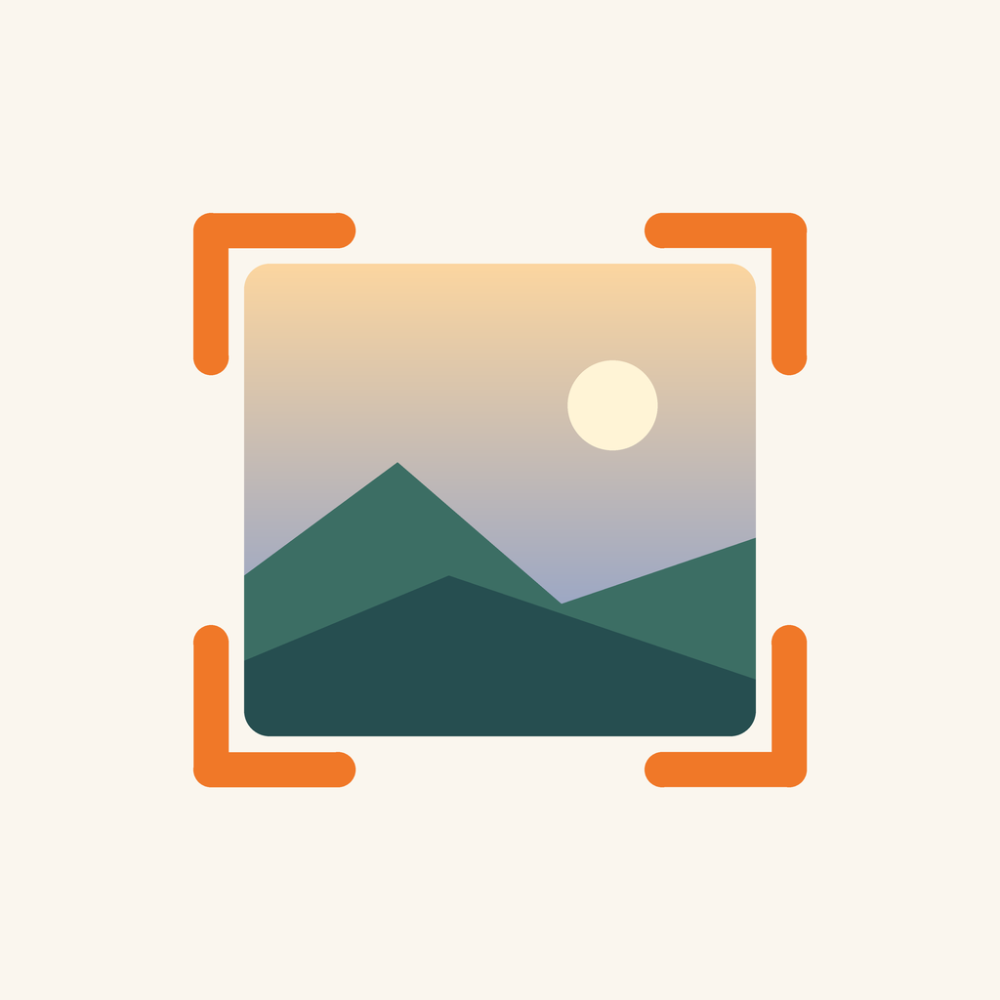

ぴったり写真写真の条件ガイド
宅建試験のインターネット申込みで使う顔写真の条件
2026-11-18 更新
先に答え
不動産適正取引推進機構のよくある質問では、インターネット申込みの顔写真は縦900ピクセル以上・横720ピクセル以上、JPGかPNG(iPhoneのSafariからはHEIFも可)です。容量の上限は書かれていません。iPhoneで撮った写真なら、多くはそのまま使えます。
公式に書かれている条件
インターネット申込み時の顔写真
| ピクセル数 | 縦の長さ900ピクセル以上、横の長さ720ピクセル以上 |
|---|---|
| 指定できる場合 | 頭の上の余白90ピクセル、顔の長さ600ピクセル |
| ファイル形式 | JPG、PNGのいずれか。iPhone(Safari)はこの他にHEIFも可 |
| 撮影 | 当該年の1月1日以降、本人のみ・無帽で正面・背景(影を含む)なし |
アップロードした写真はシステム側で顔を正規のサイズ・位置に調整し、JPG形式に統一する、と書かれています。受理できない例に「アプリで加工しているおそれ」「画像が粗い」があります。
出典: 不動産適正取引推進機構「宅建試験 よくある質問」(Q2-8)(2026-11-18 確認)
縮めすぎに注意
宅建は「○ピクセル以上」の指定なので、小さくしすぎると条件を下回ります。ほかの申請用に縮めた写真を使い回すときは、ピクセル数を確かめてください。また、小さい写真を引き伸ばすと粗くなり、受理されない例に当たります。
確認した公式ページ
- 不動産適正取引推進機構「宅建試験 よくある質問」(Q2-8)(2026-11-18 確認)
- 不動産適正取引推進機構「宅建試験」(2026-11-18 確認)